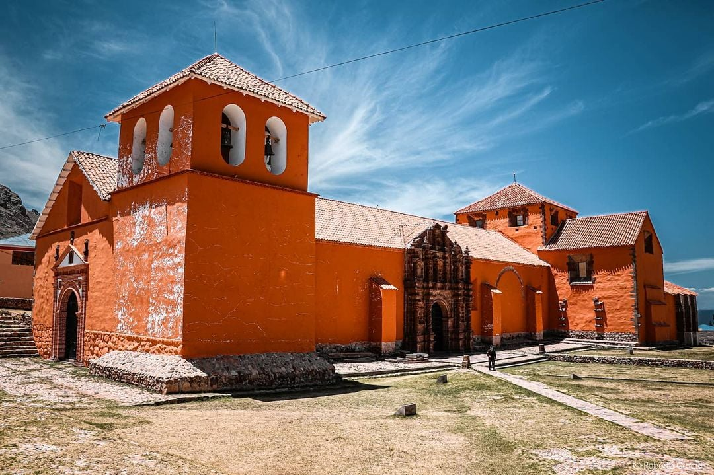
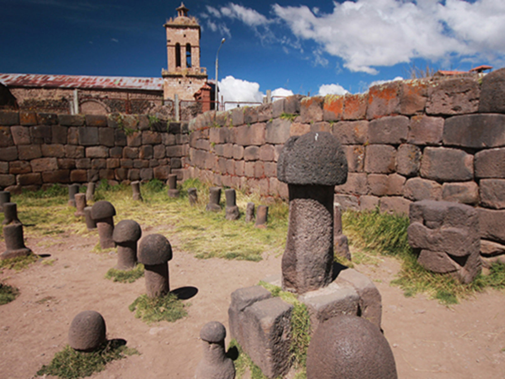
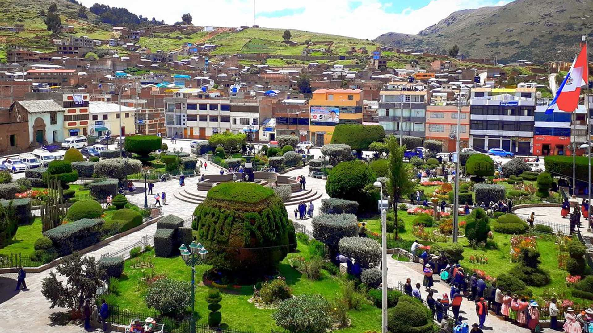
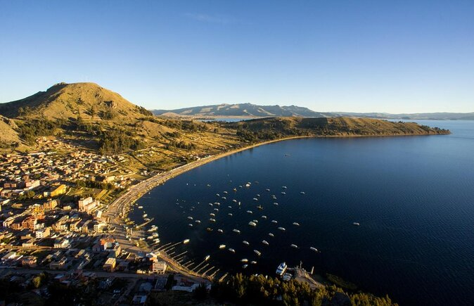

Tourist places are sites of interest and attraction for visitors due to their cultural, historical, natural or recreational characteristics. These places are often popular with travelers and offer unique experiences that can range from exploring historical heritage to immersing themselves in nature or participating in local events. Here is a description of the types of tourist places.
TEMPLE OF THE VIRGIN CANDELARIA
This temple is one of the main attractions of Chucuito and an important religious center for the local community. With its colonial architecture and ornate details, the temple is a testament to the region's religious fervor and offers insight into Andean spiritual traditions.
At the time of the Republic, on June 3, 1828, Juli was declared the capital of the province of Chucuito.

ARCHAEOLOGICAL RUINS OF CHUCUITO
The archaeological ruins of Chucuito are a fascinating vestige of pre-Inca and Inca history. Here you can explore ancient temples and ceremonial structures that reflect the sophistication of the civilizations that inhabited the highlands. These remains provide a window to the past and the splendor of ancient cultures.

CHUCUITO MAIN SQUARE
The Plaza de Armas is the heart of Chucuito, a picturesque place surrounded by colonial architecture and small cafes. It is the ideal place to relax and observe the daily life of the district. Additionally, the plaza is often the setting for local events and festivities, offering an authentic perspective of Andean celebrations.

MUSEUM OF PRECOLUMBIAN ART
This museum houses a collection of pre-Columbian artifacts that illustrate the rich cultural heritage of the region. Its exhibits include ceramics, textiles and ancient tools, providing a detailed insight into the civilizations that inhabited the highlands.
LAKE TITICACA
Although not directly in Chucuito, Lake Titicaca, located nearby, is an essential attraction for those visiting the region. This boating lake is famous for its stunning views, floating islands and traditional communities that surround it. It is an excellent place to take boat rides and enjoy the natural beauty of the plateau.

Thank you for visiting our page! We are glad that you are interested in Chucuito and Juli, two fascinating destinations in Peru. We hope that the information and recommendations encourage you to discover these unique places.
Chucuito, with its history and culture, and Juli, with its impressive heritage, offer authentic experiences that you will love. We invite you to experience the magic of these destinations in person!
If you need more details for your trip, we are here to help you. Enjoy your adventure and we hope you have an unforgettable experience in Chucuito and Juli!